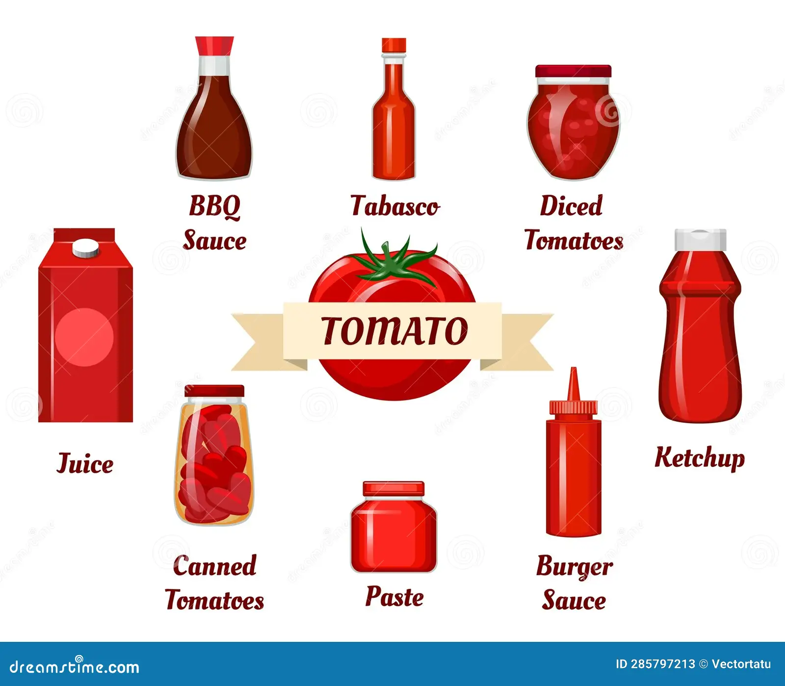

Overview
Tomato is an important vegetable crop grown worldwide and is a rich source of vitamin C, vitamin A, potassium, and antioxidants.

Growing Conditions
- Climate: It grows well in a warm and sunny climate, with moderate temperatures of around 20–30°C.
- Soil: Requires fertile, well-drained loamy soil with good organic matter.
- Water: Needs regular and balanced irrigation, but waterlogging should be avoided.
- Sunlight: Requires about 6–8 hours of sunlight daily for healthy growth and good fruit production.
- Growing Period: Tomatoes generally mature within 60–90 days, depending on the variety and growing conditions.


Uses
Used in curries, salads, soups, sauces, ketchup, juices, pickles, and various processed food products.
Nutritional Value: Helps provide antioxidants such as lycopene, which contributes to a healthy diet.
Economic Importance: Tomato is an important commercial crop that provides income to farmers and supports food-processing industries.
